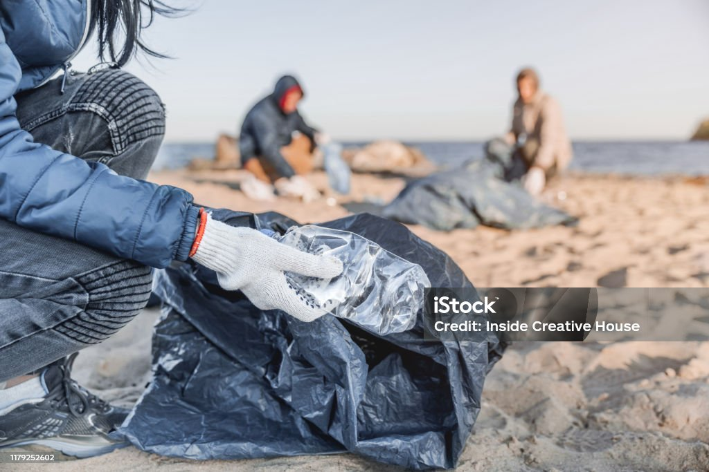

Monitoramento da Poluição
Monitoramento do lixo em locais diversos ao longo do tempo, para identificar áreas críticas e orientar esforços de limpeza.
Educação e Conscientização
Plataforma educacional interativa que forneça informações sobre os impactos da poluição marinha e como as pessoas podem ajudar.
Engajamento da Comunidade
Os usuários registram suas próprias atividades de limpeza costeira, adicionando dados sobre a quantidade de lixo recolhido e a localização.
Luta contra a poluição Transforme dados em ação com a Clean Tracker.
Nosso objetivo é capacitar todos a contribuírem para um meio ambiente mais limpo, oferecendo ferramentas de monitoramento precisas, educação ambiental interativa e um espaço para engajamento comunitário.

Clean Tracker Unindo tecnologia e comunidade para um oceano livre de poluição.
Para ajudar na luta contra a poluição no oceano Clique aqui